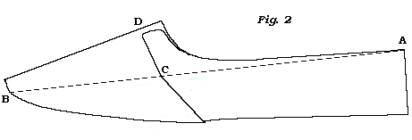
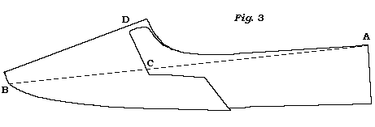
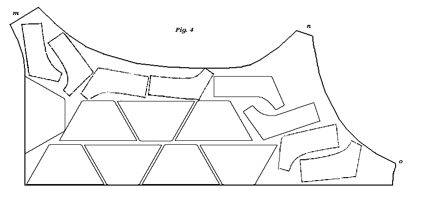

Men�s Shoes.
But before you begin to cut, you should learn to take the size of the foot, and
the orders relative to the shoe: therefore take the size stick, and let the
person's foot lie flat on it, with
the fixed upright close to the person�s heel, and the sliding upright close to
the longest toe, and that is in general the great toe; then you have the real
length of the foot,�Now, to put the length of the foot down in the order
book, you may put the bare length, without any allowance, as some do; or enter
it down with the requisite allowance the last is to be of the latter I would
have the young learner to adopt; as it will do away any further thought, when
you are to look for a last to cut the shoes out.
In the next place, with a graduated piece of parchment, taken from the sizes on the size stick, or graduated in any way so as to be a fixed rule, take the width of the foot over the instab, and over the joints of the toes and set them down in the order book.
Then take the length and depth of the quarter, the width of the sole at the joints, and the form of the toe, the quality of the leather, whether it be wax or grain calf-skin, seal or Spanish light, middling or stout, all of which enter in the order book.
In bespoke work there may be many more trivial orders given, which depends on the customer�s opinion and fancy.
I mentioned above, that you must make such allowances in the length of the last above that of the foot, which of course I should explain.�If you ever worked on the seat, you must have observed, after a shoe was taken off the last, and left to dry a day or more, that it was not possible with out violent efforts to force the same last into the same shoe again.
Because leather is of an elastic nature, and it is strained on the last in the making of the shoe, as soon as the last is out, it endeavours to regain its former position; therefore the shoe will get smaller: and independent of that, no person would be able to bear a shoe so tight as the shoe is on the last.
Therefore, experience has taught the trade to make certain allowances according to the form of the toe.�Hence, for sharp toes, three or more sizes; for round toes, from a size and a half to two sizes: but if the toe of the last is very full, and rather thick, from half a size to a size.
These allowances are for a middling size foot; but if the foot is slender, you may not allow quite so much; and if fuller, you must allow something more. �To write the whole of the order in words, would take too much room and time, besides being prolix to look over. To abbreviate these inconveniences, I shall give for an example the following formula :�
| Mr. Timothy Trusty, No. | Piccadilly, | |
|
7 4/3., W, G, S, or Span. Shoes
or Ps. Qr. 6 1/2. D. 2 1/4, S. or R. toe. Bot. 3. light or stout. R and L. |
||
The above in words.�Mr. Timothy Trusty,. No. Piccadilly. Foot seven sizes in length, four sizes over the instab, three over the joints of the toes, wax or grain calf leather, seal or Spanish leather. Quarter six inches and a half long, two inches and a quarter deep, sharp or round toe, bottom of the last at the joints three inches wide, light or stout, right and left lasts.
A. bare inspection, of the two is sufficient to give a decided preference to the first.
Likewise. you must pay attention, whether the person has a thin or full heel, a projecting or a dented heel behind, and whether a flat or a hollow tread to the foot: these things you must observe, that the last may be similar.
In choosing a last for the customer, endeavour to recollect the person�s foot, that the last may be as near alike as you possibly can, and you are to pay every attention to the customer�s orders; but though I would have you to be regardful in every respect to the orders of the customer, do not forget the shoemaker; that is, don�t let him lead you from the trade, which has often been done to the disappointment of both.
If the last should be a block last, and with it boots have been made to fit the person very well, you are not to trust to it on that account to make shoes on it for the same; because they will be too narrow.
In a boot, the vamp is in one piece from the ankle to the toe; therefore it will give way to the foot with more ease and freedom than the shoe; because the side seams in the shoe will not give way, but will girt the foot too tight if made off the same last.
Therefore, as the side seams will not give way for the foot as the vamp of the boot, you must make use of a middling instab leather on the last to obviate that defect. I mention this cercumstance, that you may not take it for granted, as the last served in one instance, that it must do in the other; but that you may be on your guard, to pay attention to the directions taken.
Hence it is evident, that the foot of the boot, to fit close about the instab, may be a full size less than the real measure of the person's foot.
Another thing I would wish the young learner to pay attention to, is, that the spring of the last is full equal to that of the foot.
You must have observed, when taking the length of the foot, that from the first joint of the great toe, to the end of the same, that the part of the foot gradually inclines above the flat or level of the size stick, and that the the toe bears in general against the sliding upright from an inch to an inch and a half above the flat or graduated part of the side stick.
Therefore the last should be full as much of the same spring; otherwise there will be more upper leather from the top of the heel seam to the toe, than the length of the foot in the same direction, and consequently the quarters are very liable to sit loose.
Now, after you have chosen a last to answer the purpose, you must prepare the patterns*, before you can attempt to cut the leather.�Let the patterns be of middling stiff paper, which is generally used, as being easier formed and altered.
*I would not have you to hanker after old patterns from this or that shop; but to form in your own mind such patterns as circumstances may require.
In the first place, cut the quarter to the length and depth, and the upper part to the form required, as some require it high behind and low at the side, as sailors usually do; others rather straight from the heel seam to the tie; and some high at the side and low behind; but a projecting heel must have the quarter rather high behind, otherwise it will he inconvenient to keep the shoe on the foot.�These things you must be attentive to, when the orders are given.
The general mode of the form of the quarter at the upper part is rather straight, and the strap at the tie about half an inch wide. The form of the quarter at the side seam you must leave till you have fitted the vamp pattern to the last, which you must leave so much fuller than the last as you think will taken up in the sewing, and that is about three-eighths of an inch to half an inch. Or, as much as you think is needful from the edge of, the last to cover the feather of the inner sole, and to come under the sewing stitch.
Then fix the quarter pattern on that of the vamp, and lay the last on them, and see that the heel seam part of the quarter is regular with the middle of the heel part of the last; which should have been cut in the first place to answer the heel seam part of the last, for the last is fuller at the low part than at the top of the heel seam, to answer that of the man�s heel: therefore the heel seam part of the pattern ought to be cut sloping, to correspond with the heel part of the last. Now that you have the heel part of the quarter and last to answer, look to the vamp at the toe, and let the middle of the vamp come full over the middle of the toe of the last; for so much as the middle of the vamp is above the middle of the last at the toe, so much will the upper part of the upper leather be shorter than the last in the same direction: therefore it is sufficient for the middle of the vamp to be a trifle above the middle of the last at the toe, to give a proper strain to the quarters and vamp: likewise, leave the vamp so much larger than the last, as was observed before, that it was to be wider.
Now take the last from off the patterns, and let them remain in the same position with a weight on them; and before you cut the form of the quarter at the end of the side seam, whether it be as that in fig. 1st, 2d, or 3d, the distance from A to C, and front C to D jointly, must be equal to half the width of the heel, taken to the rising part on the back of the foot; otherwise, the person for whom the shoes are made will not be able to get the quarters up at heel.


Therefore, in a very short quarter, you must mind that the length from the heel
seam to the stabbing at the side seam, and from thence to the middle of the
vamp under the tie or strap, be equal to half the length of the heel, as above
described. Hence, unless there be heel room, the shoe will not get on the foot.
From the above it is evident, that if the quarter be short, the side seam must be low in proportion, that the length from the end of the heel seam to the stabbing at the side seam, and from thence to the middle of the vamp under the tie, may be equal to half the length of the heel as above: so the distances on both sides are equal to the whole length of the heel.
But if the quarter be long, that is, seven inches or more, then it is beyond the length of most men�s heels; the above rule is of no consequence in this case, for here you are to let the side seam be as high as the decent appearance of the shoe will admit that the stabbing at the and of the side seam may clear the joints of the foot, which you can in the form of fig. 1st, and 3d; but in the form of that in fig. 2d you cannot avoid it so well.
Now, after you have taken the dimensions as above directed, mark the height of the side seam with the point of an awl, and cut it to one of the above forms, and let there be a sufficient length of the vamp come within the tie: but that depends much on the fancy of the customer, as some will only have it barely within the tie, and others will have it half an inch or more: so in this case you must be guided by the customer.
In all of the above three forms let the side seam be cut sloping inward towards the heel, not only, if the quarter be long, to avoid the seam from pressing on the joints, but it will give the shoe a free and an easy appearance, and will be much stronger, as the strain is not so great in an oblique as in a direct position, (and by Mechanics, it is, As the Sine of the Obliquity, is to Radius.)
In like manner you must proceed with the patterns for every customer; and for general use, you may cut patterns to every size last, and to every length and depth quarter, and to narrow, middling and wide vamps, such as you may think and find in your daily practice, that will become in constant service.
Now as you have the patterns ready, the next thing is to trench by them the upper leathers out of the skin.�But before I proceed, I would wish to draw your attention to an observation or two on straight and crooked lasts.
Right and left lasts are made as near as possible to the form of the feet, and the shoes made on them will fit better than those that are made on straight lasts. �The right and left shoes have no loose leather at the inside of the feet when they are on, which is unavoidable in the straight: but there is one great disadvantage in the right and left; if the wearer do not tread even, the shoes must wear much on one side, as there is no remedy in changing; to which some persons are very partial.
Some people have the soles of their feet very flat, and they find right and left shoes very uncomfortable; therefore in this case a straight last is preferable.�Likewise persons whose feet have been tortured with the gout, rheumatism, or violent corns; for all of them give the preference to a straight last.
To obviate as much as possible the uneven tread of the wearer of a right and left, let the inside ball of the last at the joint be higher than common, that the inside joint of the foot may be thrown to bear, heavy on the inside tread of the shoe.
Now we will proceed to that part which is commonly called
Trenching.
Here I would have the young tyro to be particular, at all times when trenching, to let the length of the quarter and width of the vamp be in the length of the skin; as: you may observe in fig. 4. I have only marked out half of a skin, as the other half is to be cut in the same order; for the two vamps must be cut to match, one from each side of the skin directly opposite to the other, otherwise they will be of unequal substance and texture.

If there should be a defect in the opposite side of the skin, that will prevent you from having them out direct, let that on the defective side be as near as possible, that the two vamps may be similar in substance and appearance for to wear alike.
The quarters are not of that import which the vamps are, for they are not exposed to the wear the vamps are; they may be taken out of the shanks, as at m, n, and o, if the leather be of proper substance and fineness.
The reason that I would have you cut the skin in the manner above directed, is, that all skins have the fibres running lengthwise from the head to the tail and down the legs; therefore the strongest way of the skin is in that of its length.
Indeed, a skin is not much unlike that of a piece of cloth; for the fibres of the skin of an animal are like the warp threads in the loom, which constitute the length and strength of a piece of cloth; for the woof (or the threads carried along with the shuttle) is to bind and keep the warp threads in the form the cloth is to be of; and hence it does not constitute its real strength.
Therefore, as a skin is similar to that of a piece of cloth, the strongest way is in the length or in the direction of the hair of the animal; but of woolly animals, such as sheep, the skins are not so regular, besides being very porous.
Now, to cut a skin to the best advantage, is to cut one skin into quarters of one length, and another to another length; and likewise the same for vamps. But as vamps cannot be cut good and fine beyond the shoulders of the skins for the shoulders and the necks are in general too coarse, they should be cut into quarters, boys� shoes or coarse men�s shoes, which may wear equally as tough as the fine part.
After you have trenched the upper leathers out of the skin, take a pair of pincers and stretch the quarters in the length, otherwise you will not be sure of the length or depth of them; for some kind of leather will stretch a great deal more than others; and unless previously stretched, the quarters, when the shoe is lasted, may so stretch that one quarter may be a quarter of an inch longer than the other, and consequently shallower in proportion.
The vamps are to be strained in length, and fold them in the middle, the black side together. Cut the vamps and quarters true and smooth to the patterns. Let the vamp lining be cut out of strained sheepskin, or yellow rone, and wide enough to come on the vamp a little beyond the opening of the side seam, and long enough to come below the side lining.
On the vamp lining write the person�s name for whom they are intended, and the length and width the last is to be of, that, if they should not fit, you may know the size of them when put in the shop.
Let the strap bits be of any kind of morocco leather; such bits as come off in cuting women�s work. The back pieces and side lining, the form of them I have given in the article Closing. And to make the quarters firm and stiff behind, give some bits of upper leather to slip in between the back piece and quarters, as stiffening, which will prevent the quarters to break at the seat. Tie the whole up together in the vamps, and mark the outside vamp so that you may know for whom they are intended.
In fitting the bottom stuff, be careful that the soles, inner soles, top pieces, &c. are not wider than the last, and that neither is stouter nor lighter than the upper leather requires, and the customer orders: For, by being particular in these things you will be of benefit to your employer and please the customer.
When the shoes are brought from the maker, you are then to see that the seat of the inner sole and fore part is smooth, and then round the quarters even, before they are sent to be bound; do not let the ends of the straps quite meet, but let them be about a quarter of an inch apart, for there will be a better purchase to tie the shoe firm on the foot.
If the shoes be right and left, let the strap of the inside quarter be a trifle longer than the outside, because the inside ankle of the foot is fuller than the outside ankle; therefore it will force the inside quarter more out when the shoe is on, and will bring the ends of the straps to meet even, otherwise the inside quarter will appear shorter, if rounded even.
After the shoes are bound, punch holes in the straps (if to tie) about a quarter of an inch from the end of the strap; and lay the binding smooth by hammering of it gently down on the cutting-board. If the binding be leather, colour the outside of it; and if the upper leather be waxed grain, and it should be any wise rough, put a little soft. paste on it, and with a damp spunge lay the grain smooth; but mind that the paste be well rubbed in, that none of it may appear in any degree on the upper leather.
When the upper leather is got pretty dry, let it then be sized*, and after it is got nearly dry from the sizing, put in the seat piece and label and size it over again; then it will he brought nearly to the same state as when the skins came from the currier.
*Size is made by putting about a handful of white sheepskin shreds to about a pint of water, and let them simmer near the fire for about eight or twelve hours, then strain it to cool.
But if the waxed grain be very close and fine, or if it be dyed on the grain of the skin, sizing only will be sufficient.
So much for shoes; and I think, independent of
practice, I have omitted
nothing that is needful.
The Method of cutting a Man�s Boot.